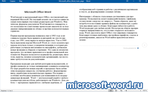

| Категория: | Текстовый редактор | |
| Поддерживаемые ОС: | Windows 7 | |
| Разрядность: | 32 bit, 64 bit, x32, x64 | |
| Для устройств: | Компьютер | |
| Язык интерфейса: | На Русском | |
| Версия: | Бесплатно | |
| Разработчик: | Microsoft |
Для эффективной работы с текстами необходимо скачать Ворд для Windows 7. Удобная программа являющаяся к тому же одной из самых популярных среди пользователей. Большинство рутинных задач можно выполнить быстрее с помощью Word, при этом программа удобна в использовании, имеет множество полезных инструментов и возможностей.
 |
 |  |
{kind=link}
Microsoft Word для Виндовс 7 на компьютер
Microsoft Office Word является многофункциональным текстовым процессором, предназначенным для редактирования, создания, форматирования и других процессов обработки любых текстовых документов. Программа используется повсеместно, в связи с чем ее бинарный формат документа стал стандартом. Майкрософт Ворд обладает удобным пользовательским интерфейсом и большим числом полезных функций, которые облегчают работу над текстами. При этом программа постоянно обновляется, в последних версиях добавлена возможность коллективной работы над документом через Интернет. С помощью Ворда можно создать или оформить по желаемому формату таблицы, фотографии, картинки и графики.
В отличие от других текстовых редакторов, Word форматирует страницу по необходимому формату. Благодаря этой возможности с помощью программы можно полностью подготовить к печати любой материал: книгу, газету, журнал, либо создать веб страницу. Более того, пользователям предоставлена возможность работать сразу со множеством документов. Еще одним преимуществом текстового редактора является автоматическая проверка грамматики и стилистики текста, что экономит время и позволяет избежать ошибок. Работать можно с текстами на любом языке, функция проверки грамматики при этом сохраняется.
Microsoft Word для версий windows:
Скачать Word для windows 7 бесплатно
| Приложение | OS | Распаковщик | Формат | Версия | Торрент | Загрузка |
|---|---|---|---|---|---|---|
| Microsoft Word 2016 | Windows 7 | OpenBox | x32 | Бесплатно (на русском) | ||
| Microsoft Word 2013 | Windows 7 | OpenBox | x32 | Бесплатно (на русском) | ||
| Microsoft Word 2010 | Windows 7 | OpenBox | x32 | Бесплатно (на русском) | ||
| Microsoft Word 2007 | Windows 7 | OpenBox | x32 — x64 | Бесплатно (на русском) | ||
| Microsoft Word 2003 | Windows 7 | OpenBox | x32 — x64 | Бесплатно (на русском) |
Как установить Ворд:
Запустите файл.

Ознакомьтесь с информацией и нажмите "Далее".

Нажмите "Далее", или снимите галочки с рекомендуемого ПО и нажмите "Далее". Если снять все галочки, рекомендуемое ПО не установится!
Если нажать установить, установятся все сборки пакета, в "настройках" можно отдельно установить пакеты программы.

Программа Word входит в пакет Microsoft Office или может быть скачана отдельно при необходимости. Однако все составные Microsoft Office дополняют друг друга. К тому же, при работе в Ворде можно использовать материалы, созданные с помощью других программ пакета. Установить Microsoft office Word не составит никаких проблем. Более того, программа оптимизирована под седьмую версию Windows визуально и функционально.
Хоть винда уже и старенькая, но хорошо работает и ворд отлично подходит
Установила, все работает, мне нравится!!!
Единственная версия нового Ворда, которая нормально завелась на 7-ке, благодарю.
Я ей до сих пор пользуюсь
Отличная программа. Я уже скачала.
Спасибо
Пользуюсь
годный и понятный инструмент. нот бэд
всё работает!
наконец нашла. скачаю
советую, не заменимая прога